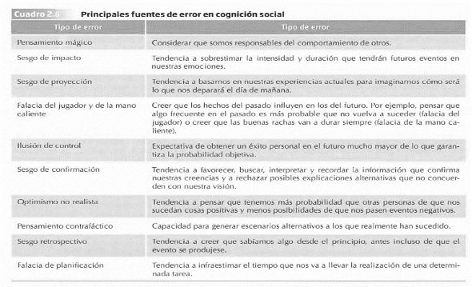

Capítulo 5 4. FALACIA DEL JUGADOR Y DE LA MANO CALIENTE
- La falacia del jugador
La falacia del jugador hace referencia a creer erróneamente que los sucesos pasados afectan a los futuros en actividades aleatorias, como los juegos de azar (Tversky y Kahneman, 1971).
Creer que la equiprobabilidad [^5] se manifestará en un número reducido de observaciones.
EJEMPLO: lanzamiento de moneda
Cuando nos imaginamos una secuencia de unos pocos lanzamientos de moneda, donde dos sucesos tienen la misma probabilidad de ocurrir, tendemos a pensar que en esos tiros saldrán un 50% de las veces cara, y
un 50% de cruz. Lo “razonablemente esperable” es que: si en una secuencia de cinco lanzamientos de monedas salen cinco caras, los siguientes resultados sean cruces.
EJEMPLO: CI estudiantes
«Se sabe que la media del Cociente Intelectual (CI) de la población de estudiantes en una ciudad es de 1OO. Has seleccionado una muestra al azar
de 50 niños para un estudio sobre el éxito educativo. El primer niño analizado
tiene un CI de 150. ¿Cuál esperas que sea la media de CI para la muestra entera?» La mayoría de las personas suele responder que 1OO. Sin embargo, la respuesta correcta es 101 (150 + (49 x 100)) / 50 = 101). Lo “razonablemente esperable” es que, si un niño se desvía mucho con un CI de 150 de la media en inteligencia, que es 100, aparezca otro que lo compense con un CI de 50
Estos investigadores comentan que las personas creemos firmemente en la «justicia» de las leyes del azar: cualquier desviación de la norma se autocorregirá para que el resultado final acabe siendo lo más parecido a lo «normal».
Cuando existen muestras muy pequeñas, como en el caso de una secuencia corta de lanzamientos de una moneda, no se aplican las «leyes de los grandes números».
TEORÍA DE LOS GRANDES NÚMEROS[^6]: “según la cual cuando tenemos una muestra lo suficientemente grande, la media muestral se parecerá mucho a la poblacional”, ya que “a medida que aumenta el número de observaciones nos alejamos de los resultados extremos”. Así, por ejemplo, si lanzamos al aire una moneda únicamente tres veces, “habrá más posibilidades de que todas salgan de un mismo lado que si tomamos una muestra de 500 lanzamientos”. En la medida que aumentamos el número de tiradas, nos acercamos a la probabilidad real de obtener un 50%.
- Falacia de la mano caliente
Fenómeno opuesto a la falacia del jugador.
Hace referencia a la tendencia que tienen los jugadores que han anotado una serie de tiros en un periodo corto de tiempo a creer que están en mejor disposición para el acierto que el resto de compañeros (Gilovich et al, 1985).
ESTUDIO: se analizaron las estadísticas de tiro del Filadelfia 76ers, de los 9 jugadores analizados, 8 de ellos presentaban probabilidades más bajas de anotar un tiro después de un acierto (51%) que después de haber fallado (54% de acierto).
La mano caliente (de quien está en racha) no existe. La probabilidad de meter una canasta después de una buena racha era más baja que la de anotar después de una mala.
- Después de 3 o 4 aciertos el siguiente lanzamiento tenía una probabilidad del
50% mientras que después de 0 o 1 acierto en una serie de 4, era del 57%
- ILUSIÓN DE CONTROL
La ilusión de control es una expectativa de obtener un éxito personal en el futuro mucho mayor de lo que garantiza la probabilidad objetiva (Langer, 1975).** Principalmente se da cuando creemos erróneamente que interviene nuestra habilidad en situaciones de azar.
EJEMPLO: VENTA DE BOLETOS
En dos empresas se hace una rifa de un mismo sorteo vendiendo boletos a 1$:
- en una empresa se les da un número de boleto al azar
- en la otra se les permite elegir el número del boleto.
En una segunda ronda del experimento, se dice en las empresas que alguien de la otra empresa se ha quedado sin boleto que poder comprar y que si alguien le vende el boleto a la otra empresa.
RESULTADO: Los empleados que eligieron el boleto pidieron un precio muchísimo más alto (8.67$ de media) que los de la empresa que no eligió (1.96 dólares de media).
La libre elección hacía creer a los empleados que su boleto tenía un precio más elevado.
- SESGO DE CONFIRMACIÓN
Es la tendencia a favorecer, buscar, interpretar y recordar la información que confirma nuestras creencias y rechaza posibles explicaciones alternativas que no concuerden con nuestra visión (Watson, 1960).**
Los algoritmos de aplicaciones (como YouTube) favorecen este sesgo, ya que nos proporciona contenido que cree que nos puede gustar y, de esta
forma, acabar informándonos con noticias afines a nuestras actitudes previas, evitando exponernos a otras creencias contrapuestas a nuestras ideas.
El auge de las fake news se explica mediante este sesgo: por muy absurdo que sea el argumento, si hay gente que lo cree, la persona tenderá a buscar información que sea congruente con su visión, evitando leer fuentes oficiales que podrían llevar la contraria a sus creencias.
- OPTIMISMO NO REALISTA
Hace referencia a la tendencia de los individuos a pensar que tienen más probabilidad que otras personas de que les sucedan cosas positivas y menos posibilidades de que les pasen cosas negativas (Weinstein, 1980).**
ESTUDIO: se les dio una serie de eventos con carácter positivo y otros con carácter negativos a una serie de estudiantes, y tenían que decir del 0 a 100% cuánto de probable creían que les ocurriría dicho evento en comparación con otro alumno de su mismo sexo.
RESULTADO: Los eventos positivos tuvieron de media un 15.4% y los negativos un -20.4%.
El optimismo no realista de los participantes se asociaba con un menor interés por hacer algo para reducir el riesgo de padecer enfermedades, bajando la preocupación que sentían por los problemas de salud, llegando a dejar de realizar conductas preventivas o incluso realizar comportamientos de riesgo.
- PENSAMIENTO CONTRAFÁCTICO
- Derivan del heurístico de simulación
Habilidad para generar escenarios alternativos a los que realmente han sucedido (Kahneman y Tversky, 1982).
ESTUDIO: Se plantea a unos estudiantes que Mr. Jones moría en un accidente de tráfico, a unos se les dice que salía de trabajar a su hora habitual, a otros que había salido un poco antes por un motivo extraordinario para realizar un recado que le había pedido su mujer.
RESULTADO: con mayor frecuencia los estudiantes de la condición “salir antes” mencionaban que no hubiese pasado si hubiese salido del trabajo a su hora habitual y no hubiese coincidido con quien tuvo el accidente. El otro grupo creyó en mucha menor medida que se hubiese salvado.
Los estudiantes tenían más dificultad para imaginar un escenario alternativo cuando el suceso se percibía como cotidiano.
ESTUDIO: En un estudio más reciente sobre los Juegos Olímpicos de Barcelona del 92, se le mostraba a un grupo de estudiantes imágenes de los deportistas después de competir, y durante la entrega de medallas (todos ellos habían sido plata o bronce, los videos estaban editados para que los estudiantes no pudiesen saber la medalla de los deportistas). Se les pide a los alumnos que evalúen las emociones de los deportistas en una escala de 10 puntos.
RESULTADO: la media de los atletas de bronce era 7.1 después de terminar la prueba y 5.7 en la entrega de premios. De los de plata fueron 4.8 y 4.3 respectivamente. Tanto en la competición como en la ceremonia de entrega, los medallistas del bronce estaban más satisfechos que los de la plata.
Los investigadores interpretan los resultados según los pensamientos contrafácticos:
- Pensamiento contrafáctico al alza: los medallistas de plata se comparan con quienes habían ganado el oro y estaban decepcionados.
- Pensamiento contrafáctico a la baja: los medallistas de bronce se comparaban con los que acabaron en cuarto lugar y se quedaron sin medalla.
FALACIA DEL PRIMER IMPULSO: se trata de otro contexto del pensamiento contrafáctico donde existe una tendencia a considerar que la primera opción qu e se escoge es la correcta y hay una gran resistencia a considerar otra alternativa como válida.
Un ejemplo de esta falacia son los exámenes, donde incluso los profesores suelen perpetuarla alentando a los alumnos a mantener en su primera opción. Sin embargo, si en un examen, mientras revisamos cambiamos nuestra
respuesta por una segunda opción y resulta incorrecta tendremos pensamientos como “podía haber acertado si me hubiese quedado con
la primera opción…”. Incluso, el malestar sería menor si la opción
inicial fuese incorrecta y nos hubiésemos negado a cambiarla.
- Existen estudios que demuestran un mejor resultado cuando se cambia de opción.
- SESGO RETROSPECTIVO
Tendencia a creer que sabíamos algo desde el principio, incluso antes de que el evento se produjese (Fischoff y Beyth, 1975).**
ESTUDIO: Durante 1972 se le preguntó a un grupo de personas de EEUU acerca de qué acontecimientos creen que sucederán tras la visita de Nixon (presidente de EEUU) a China y la URSS, eran una serie de frases ya formuladas a las que los participantes debían asignar una probabilidad (ej: Mao Zedong estaría dispuesto a recibir a Nixon, China obtendría reconocimiento diplomático por EEUU…). Tras el fin de las visitas se les volvió a preguntar a los participantes qué probabilidad de que sucediese algo habían dado a cada evento.
RESULTADO: Cuando un posible acontecimiento había sucedido realmente, los participantes exageraban la probabilidad que le habían asignado originariamente cuando se les pedía que la recordasen.
(Ej: exageraban la probabilidad que creían haberle dado a que EEUU y la URSS creasen un programa espacial, evento que ocurrió, pero que cuando se preguntó estaban en plena Guerra Fría y era difícil de imaginar).
- FALACIA DE LA PLANIFICACIÓN
Tendencia a infraestimar el tiempo que nos va a llevar la realización de una determinada tarea.
Ello se debe a que a la hora de planificar adoptamos una perspectiva interna: nos centramos en cómo vamos a llevar a cabo
nuestra idea y los pasos a seguir para completar el objetivo, dejando de tener en cuenta otras variables externas que pueden influir determinantemente en el desarrollo del plan (Tversky y Kahneman, 1979).
En la construcción de un edificio, el jefe de obra puede saber a la perfección el plan a seguir para entregar a tiempo los pisos a los clientes, pero los materiales pueden no estar disponibles a tiempo, puede haber una huelga, puede hacer un clima desfavorable…
Una posible solución a esta falacia puede ser adoptar una perspectiva externa: que nos fijemos en el tiempo que han tardado otros proyectos similares al nuestro en ser finalmente completados.
ESTUDIO: Se realizó un estudio con alumnos que iban a realizar el TFG sobre el tiempo que tardarían en entregarlo, a un grupo se le preguntó cuanto creían que tardarían “en el mejor de los casos (optimista)” (sin contratiempos) y predijeron 27,4 días de media, y al otro grupo “en el peor de los casos (pesimista)” y fue de 48,6 días.
RESULTADO: Tras entregar el TFG, se vio que la media de entrega fue de 55,5 días, 28,1 días de discrepancia con los optimistas y 6,9 de discrepancia con los pesimistas.
Los estudiantes infraestimaron el tiempo que iba a llevarles el TFG, especialmente cuando creían que todo iba a salirles según lo planificado
